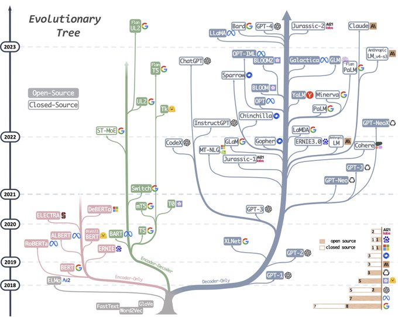

Show the code
#les librairies du chapître
library(tidyverse)
theme_set(theme_minimal()) #les librairies du chapître
library(tidyverse)
theme_set(theme_minimal()) Objectifs du chapitre :
L’actualité du NLP est largement occupée par les performance potentielles des IAG génératives qui s’appuient sur des représentations du langage que contrôlent des modèles de renforcement fondés sur des annotations humaines (RHLF). Cependant ils s’appuient sur un modèle économique qui laisse peu de place à la transparence, et à la persistance des modèles.
Pour les sciences sociales, les LLM ouverts présentent sans plus d’intérêts, car plus pratiquables, et ré-entrainables pour s’ajuster à des corpus spécifiques.
Bert au départ. Plus de paramètres plus de données
Le modèle privé est celui typique d’open AI, il s’impose par sa puissance 3000 milliard de paramètres? La qualité de son apprentissage, la généralité de son corpus, et se propose de résoudre l’ensemble des problèmes de NLP .
les modèles ouverts, sont promus par les retardataires : meta avec Llama, mistral, et rejouent les débuts de l’ère digitale. Ms-dos versus linux. Le système ouvert n’est pas un modèle gratuit, c’est un modèle où les acteurs s’accorde sur un standard public et construisent sur ce socle des services spécifiques. Dans ce genre d’expérience, l’histoire économique nous apprends qu’il y a deux équilibres et une polarisation du marché.
encoder et decoder

Dans cette section on examine principalement l’usage des modèles ouverts dans la veine de LLma, Mistral et les autres.
La première question posée par les modèles ouverts est celle de leur exploitation qui requiert qu’ils puissent être opérables et que leurs poids soient partagés. Hugging face est devenue le centre de gravité de ce véritable écosystème. 14000 modèles déposés.
Leur opérationnalité est une question de hardware : taille de la mémoire, usage de gpu, on comprendre que dans la logique de l’économie de plateforme pour encourager l’usage de ces modèles, et peut être imposer des standarts, les acteurs ont avantage à servir ces modèles en différents rapport de taille et de performance, pour différents usages ou capacités. Ils sont ainsi livré sous différentes version 7B, 13B, 70 MB, les premier pouvant être opérés sur une station de travail, les 70B exigent un GPU. On constate l’effort d’offrir des tradeèoff.
L’enjeu est de réduire la taille des modèles, sans perdre excessivement de précision.
Certains modèles sont Distillés
Ils peuvent aussi être quantisisés. C’est l’idée d’arrondir les paramètre pour les rendre plus léger.
Ils peuvent être enfin entrainés à des fins particulières. Le NER ou le SZC comme nous l’avons étudié auparavant.
En matière d’annotation, une première exigence est celle de la fiabilité des mesures. Un modèle entrainé sur un corpus général est sans doute moins performant qu’un modèle de plus petite taille qu’on réentrainé sur un corpus spécifique.
C’est aujourd’hui la question principale à laquelle nous n’avons pas de réponse définitive.
Les LLMs sont entraînés sur des corpus vastes et hétérogènes, pour leur donner plus de finnesse il peut être utile de les ré-entraîner sur des corpus spécifiques. Mais comment faire?
pour entraîner un LMM, la tâche est simple : faire des trous dans le texte et prédire le mot qui devait être dans le trous. ré-entraîner un modèle général à un set de données particulier, reviens à trouer le set de données, et à prédire les mots en modifiant les parametres du modèle initial.
Le fine tuning est coûteux et des solutions sont rapidement apparu pour réduit ce coût, l’approche lora en est un cas remarquable. L’idée est de modifier qu’une partie des paramètres, plutôt les couches hautes.
Construire les data set d’apprentissage
DPO